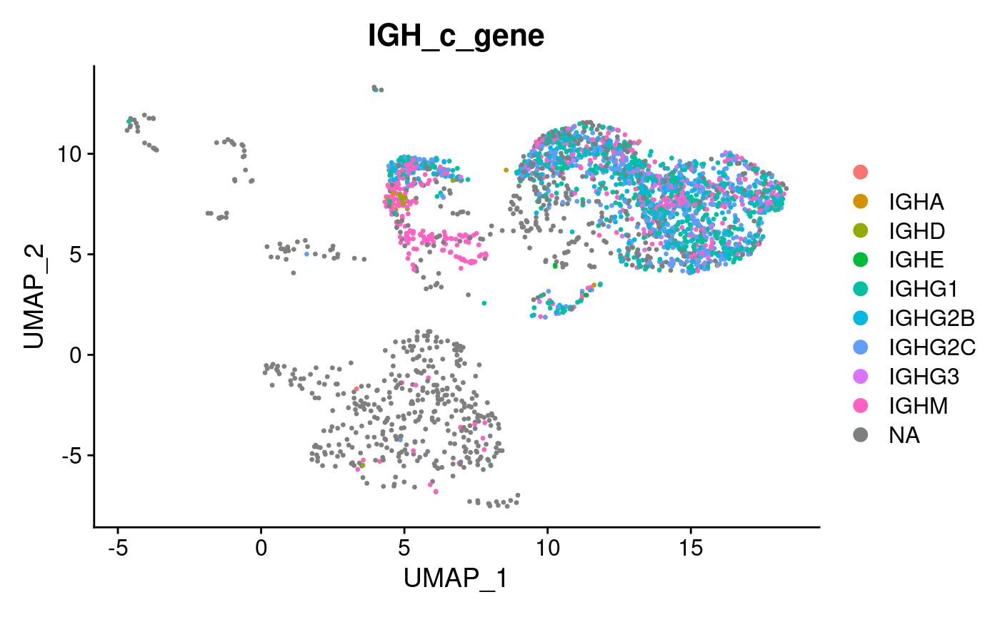
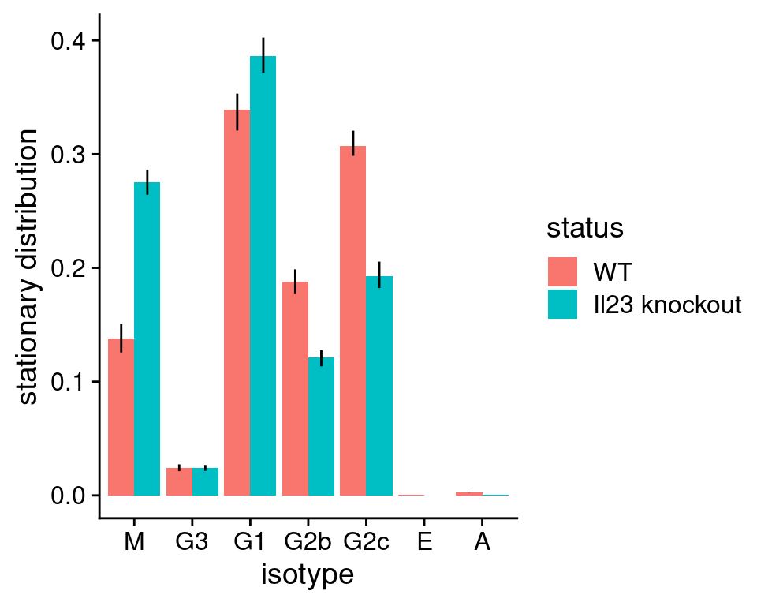
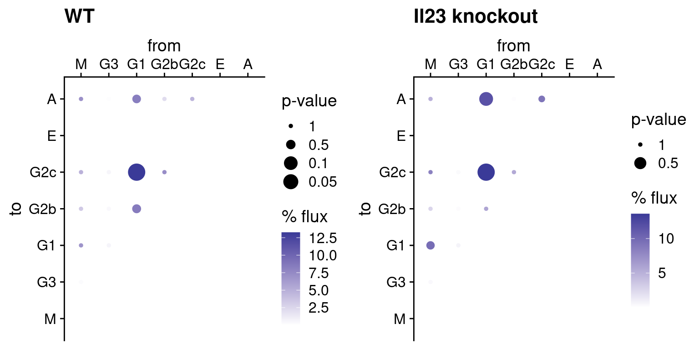
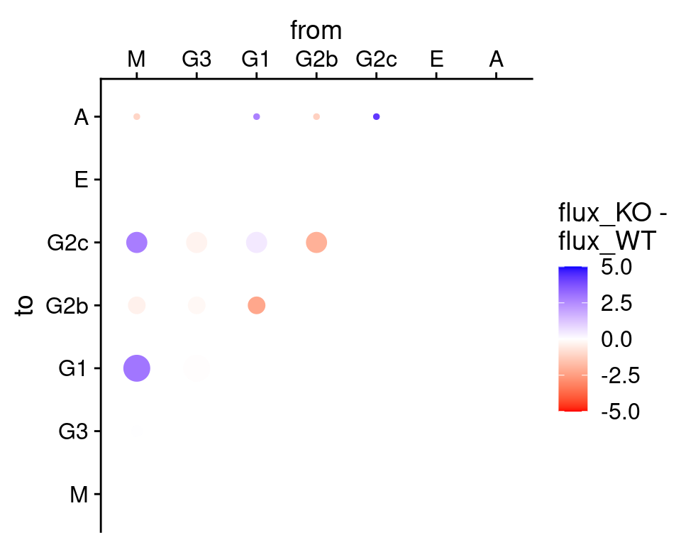

Analysing Class-Switch Recombination in B cell scRNA-seq data using sciCSR
csr.RmdIntroduction
In this vignette we will demonstrate the basic functions in sciCSR to analyse CSR. Wherever applicable, the explanations on the theoretical background of sciCSR will be kept brief in this vignette. You are encouraged to consult the sciCSR manuscript for details. We will provide a concise summary of the basic background only to the level of guiding the application of the sciCSR package on a real scRNA-seq dataset.
Start by loading the sciCSR package. Before you run any examples/analysis with sciCSR for the FIRST time, run the prepare_sciCSR() function - this will install all python dependencies for sciCSR to function.
library(sciCSR, quietly = TRUE)
# We also need the Seurat package as sciCSR interfaces
# with Seurat data objects to manipulate scRNA-seq data
library(Seurat)
# Run this if this is the first time you set up sciCSR on
# your machine; this set up the dependencies in python
prepare_sciCSR()## [1] "All dependencies have been installed. Have fun with running sciCSR!"Load the dataset
A subset of data from Hong et al. is used as an example; in this dataset, knockout of the p19 component of Il23 reduces class-switching to the IgG2b isotype in mice. We shall use sciCSR to reproduce this finding. We have included in sciCSR a susbet of this data consisting of only 4000 cells and ~ 200 genes.
hong_sampled <- system.file("extdata/hong_sampled.rds", package = "sciCSR")
hong_sampled <- readRDS(hong_sampled)
hong_sampled## An object of class Seurat
## 202 features across 3000 samples within 1 assay
## Active assay: RNA (202 features, 192 variable features)
## 2 dimensional reductions calculated: pca, umapIntegrating scBCR-seq repertoire data
scBCR-seq (that is, single-cell BCR repertoire) data of the same set of cells are also available from the publication. We should integrate this data into the Seurat object so that we can benefit from the scBCR-seq data to calculate SHM levels of cells. sciCSR can also benefit from the isotype calls from scBCR-seq to group the cells by their isotypes (whilst this can in theory be also identified using scRNA-seq reads only [see below], since scBCR-seq libraries are enriched with BCR transcripts the isotype calls are typically more reliable). In the publication, Hong and colleagues also make use of the scBCR-seq data to remove non-B-cells from their analysis.
sciCSR provides a series of functions to process the repertoire data tables, either in the form of cellranger vdj “filtered contig” CSV files or standard AIRR format files (or indeed any tabular format as long as the cell barcodes are available in the tables). We can then add selected features from the repertoire annotations as metadata in the Seurat data object. In this case we have the filtered contig annotation files from cellranger vdj, but these annotations do not contain information regarding SHM (e.g. the sequence identity when compared to the assigned germline alleles). We have ran IMGT/HighV-Quest on the filtered contig sequences and obtained an AIRR format table as output. Here we read in the cellranger contig annotations, merge this with the IgBLAST AIRR output, and then proceed to extract features from this merged table for adding them to the Seurat data object. If you wish to use SHM information for sciCSR, make sure you re-analyse the scBCR-seq contigs with another tool (e.g. IMGT/HighV-Quest, pRESTO, IgBLAST etc., or any custom in-house scripts) before merging the data!
# this is the filtered_contig_annotations.csv file from cellranger vdj
vdj <- system.file("extdata/hong_sampled_cellranger_vdj.csv", package = "sciCSR")
vdj <- read.csv(vdj, stringsAsFactors = FALSE)
# this is the AIRR-format output from IMGT/HighV-Quest
vquest <- system.file("extdata/hong_sampled_vquest_airr.tsv", package = "sciCSR")
vquest <- read.table(vquest, sep = "\t", stringsAsFactors = FALSE, header = TRUE)
# The % sequence identity to germline V allele is the column 'v_identity'
# We want to merge this column into cellranger vdj output
# using the sequence IDs as keys
vdj <- merge(vdj, vquest[, c("sequence_id", "v_identity")],
by.x = "contig_id", by.y = "sequence_id",
all.x = TRUE, all.y = FALSE, sort = FALSE)collapseBCR annotate for each cell as singlet/doublet etc. based on the number of heavy & light transcripts associated with each cell barcode. The resulting data frame should have fewer lines than the input data frame - collapseBCR reduces the input data such that for each cell, at most 1 H and 1 L sequences are retained for merging into the Seurat object. The full table without removing those sequences can also be accessed, by indicating full.table = TRUE when calling collapseBCR.
collapsed <- collapseBCR(vdj, format = "10X")Below shows addition of annotations operating in both directions, i.e. extracting data from the Seurat object metadata to add to the repertoire tables, and extracting repertoire annotations for merging into the Seurat object as additional metadata columns.
# We can add annotations from the Seurat Object into the VDJ table
# e.g. we add 'Status' (WT/KD) from Seruat object into the repertoire
# annotations
collapsed <- AddCellMetaToVDJ(
vdj = collapsed,
SeuratObj = hong_sampled,
metadata_col = c("Status")
)
# We can add data the other way round, i.e. select features from
# repertoire and add them to the Seurat Object
# First make sure we have a column in the vdj table which corresponds to
# sample names - this column must be called 'sample_name'
# In this case it is the column 'donor' - first rename this to 'sample_name'
colnames(collapsed)[which(colnames(collapsed) == "donor")] <- "sample_name"
hong_sampled <- combineBCR(
collapsed, hong_sampled,
# list the columns from vdj you wish to add to the Seurat object down here
keep_columns = c("v_gene", "d_gene", "j_gene", "c_gene",
"v_identity", "full_length",
"productive", "cdr3", "cdr3_nt",
"reads", "umis")
)
# plot DimPlot but colour by isotype from the vdj data
# to confirm the data merging has happened
DimPlot(hong_sampled, group.by = "IGH_c_gene")
We see isotype annotations are available for a group of cells confined to the top right corner of the UMAP projection - whilst a minority of cells from this group do not have available isotype information (probably because BCR transcripts were not sampled in preparing the scBCR-seq library), cells outside of this quadrant on the UMAP are mostly absent for isotype information - most probably these would be non B cells which we aren’t interested in for the sciCSR analysis. Let’s subset this dataset so that we retain only B cells, using both the presence of BCR transcripts in the repertoire data and marker expression (Cd19, Ms4a1 (CD20)) as criteria for filtering:
# there is a column 'bcr_type' added to the Seurat object which indicates
# whether the cell is singlet/doublet etc. cells without BCR transcripts will
# be labelled NA
hong_b <- hong_sampled[, Cells(hong_sampled)[which(!is.na(hong_sampled$bcr_type))]]
# subset to retain those cells positive for both CD19 and CD20 transcripts
hong_b <- subset(hong_b, subset = (Ms4a1 > 0 & Cd19 > 0))
# Since we have subset the data, rerun FindNeighbors
hong_b <- FindNeighbors(hong_b)## Computing nearest neighbor graph## Computing SNNNote: Others (e.g. the Immcantation framework) have provided alternative routes to merge repertoire annotations into Seurat data object. Feel free to choose whichever tool you feel the most comfortable with. As long as there are columns indicating BCR isotypes and the sequence identity to germline alleles in the Seurat data object metadata, you can proceed to use sciCSR’s functionalities for inferring transitions using CSR/SHM information.
Enumerating productive and sterile immunoglobulin heavy chain transcripts
The first step to run sciCSR is to identify and count productive and sterile immunoglobulin heavy chain transcripts. These transcripts are not separately annotated in conventional scRNA-seq data pre-processing, but they are crucial to understand the dynamics of CSR: sterile transcription pre-conditions B cells to class-switch to a particular isotype. sciCSR implements a set of functions to perform this enumeration; the only required input is the BAM files from the data pre-processing pipeline (e.g. cellranger from 10X).
# We first need to load the genomic coordinates of the V, D and J genes
# change to 'human_definitions' if you are working on human data
data("mouse_definitions")
# we need to supply the list of BAM files associated with the scRNA-seq
# in this case we have five libraries, a subset of the BAM file corresponding
# to the cells are available in the package
bamfiles <- c(
system.file("extdata/Hong_S1_sampled_Igh.bam", package = "sciCSR"),
system.file("extdata/Hong_S2_sampled_Igh.bam", package = "sciCSR"),
system.file("extdata/Hong_S3_sampled_Igh.bam", package = "sciCSR"),
system.file("extdata/Hong_S4_sampled_Igh.bam", package = "sciCSR"),
system.file("extdata/Hong_S5_sampled_Igh.bam", package = "sciCSR")
)
# loop through these BAM files
hong_IGH <- lapply(bamfiles, function(bamfile){
cat(paste0(bamfile, " ...\n"))
# These three functions count productive and sterile
# reads from the BAM file and give a count matrix
out <- getIGHmapping(bamfile, mouse_definitions)
out2 <- getIGHreadType(out$read_count)
out3 <- summariseIGHreads(out2, mouse_definitions)
# 'out3' is a count matrix of productive/sterile transcript
# of each isotype per cell
out3
})## /private/var/folders/n3/lvcd6wn56qjfwd2j66n8bqzh0000gn/T/RtmpVxCxwl/temp_libpath2c374fe31bd0/sciCSR/extdata/Hong_S1_sampled_Igh.bam ...## Fetching reads mapped to VDJ genes ...## Fetching reads mapped to C gene coding regions ...## Fetching reads mapped to C gene 5' regions ...## /private/var/folders/n3/lvcd6wn56qjfwd2j66n8bqzh0000gn/T/RtmpVxCxwl/temp_libpath2c374fe31bd0/sciCSR/extdata/Hong_S2_sampled_Igh.bam ...## Fetching reads mapped to VDJ genes ...## Fetching reads mapped to C gene coding regions ...## Fetching reads mapped to C gene 5' regions ...## /private/var/folders/n3/lvcd6wn56qjfwd2j66n8bqzh0000gn/T/RtmpVxCxwl/temp_libpath2c374fe31bd0/sciCSR/extdata/Hong_S3_sampled_Igh.bam ...## Fetching reads mapped to VDJ genes ...## Fetching reads mapped to C gene coding regions ...## Fetching reads mapped to C gene 5' regions ...## /private/var/folders/n3/lvcd6wn56qjfwd2j66n8bqzh0000gn/T/RtmpVxCxwl/temp_libpath2c374fe31bd0/sciCSR/extdata/Hong_S4_sampled_Igh.bam ...## Fetching reads mapped to VDJ genes ...## Fetching reads mapped to C gene coding regions ...## Fetching reads mapped to C gene 5' regions ...## /private/var/folders/n3/lvcd6wn56qjfwd2j66n8bqzh0000gn/T/RtmpVxCxwl/temp_libpath2c374fe31bd0/sciCSR/extdata/Hong_S5_sampled_Igh.bam ...## Fetching reads mapped to VDJ genes ...## Fetching reads mapped to C gene coding regions ...## Fetching reads mapped to C gene 5' regions ...The cell barcodes may not match the cell barcodes in Seurat object, since the Seurat object is formed my aggregating data from different libraries. The function ‘repairBarcode’ will go through the Seurat object and make sure the cell barcodes of these count matrices match up the Seurat object:
hong_IGH2 <- repairBarcode(
hong_IGH, hong_b,
sample_names = c("p19kd_1", "p19kd_2", "p19kd_3", "WT_4", "WT_5"),
seurat_sample_column = "Sample"
)## Assuming the order in sample_names correspond to the order in data_list. If this is not the case please rerun this function ensuring the order of these vectors match up.
# combine these individual count matrices
hong_IGH2 <- do.call("rbind", hong_IGH2)
# remove cells which are not in the Seurat object but happen to have
# observed productive/sterile transcripts
hong_IGH2 <- hong_IGH2[which(rownames(hong_IGH2) %in% Cells(hong_b)), ]Now that we have this productive/sterile transcript count matrix, we would want to merge this count matrix as a new ‘assay’ in the Seurat object. Occassionally, there might be a few B cells do not have any productive/sterile reads (in this case 2 cells). This will cause problems in merging the data. We can add them back to the matrix and proceed with the creation of this new assay:
hong_IGH2 <- rbind(
hong_IGH2,
# a zero matrix for those 'missing' cells
matrix(0,
# number of cells 'missing' in the productive/sterile count matrix
nrow = sum( ! Cells(hong_b) %in% rownames(hong_IGH2)),
# number of productive/sterile transcripts
ncol = ncol(hong_IGH2),
dimnames = list(
# these are the cells without observed productive/sterile reads
Cells(hong_b)[which(!Cells(hong_b) %in% rownames(hong_IGH2))],
# productive/sterile transcript names
colnames(hong_IGH2)
), byrow = TRUE)
)
hong_IGH2 <- t( hong_IGH2 )
hong_b[['IGHC']] <- CreateAssayObject( counts = hong_IGH2 )## Warning: Feature names cannot have underscores ('_'), replacing with dashes
## ('-')Note: This step can take a substantial amount of time depending on the size of BAM files. You may choose to use any high-performance computing (HPC) resources if you have access to those. That said, it should be entirely feasible to run these functions to count productive and sterile transcripts on a standard modern desktop computer, in a few hours’ time.
Now we have the productive/sterile transcript count per cell, added as a separate ‘assay’ in the Seurat object - below is a snippet of the count matrix:
slot(hong_b[["IGHC"]], "counts")[1:9, 1:3]## 9 x 3 sparse Matrix of class "dgCMatrix"
## CTCGAAACACTTACGA-3 TTAGTTCAGCTAACAA-2 TAGCCGGCAGCTGCAC-5
## Ighm-S . 2 1
## Ighm-P . 7 .
## Ighm-C . 6 .
## Ighg3-S . . .
## Ighg3-P . . .
## Ighg3-C 1 . .
## Ighg1-S . . .
## Ighg1-P . . .
## Ighg1-C 7 15 4We can see for each Igh C gene, there are three separate counts:
- ‘-S’: these correspond to the sterile transcripts;
- ‘-P’: these correspond to the productive transcripts;
- ‘-C’: these corresponds to transcripts which cannot be classified as sterile or productive (e.g. only 1 read mapping to the coding exons are found, in this case it can be either sterile or productive, we do not have the confidence to assign this to either category).
We can manipulate, normalise and visualise these data just like any count data. For example, here we log-normalise the data and plot a bubble plot comparing the WT cells and the Il23-/- cells:
# Normalisation; 'IGHC' is the assay that holds the
# sterile/productive count data
hong_b <- NormalizeData( hong_b, assay = "IGHC" )
genes <- rownames(hong_b[["IGHC"]])
# Let's say we want to plot only the sterile and productive counts
genes <- genes[which(grepl("-[SP]$", genes))]
DotPlot(hong_b, assay = "IGHC", features = genes, group.by = "Status") +
RotatedAxis()We can see already, without any inference, that the Il23 knockouts have lower expression level of the IgG2 subtypes.
Inferring transitions using CSR and SHM information
In sciCSR we argue that the quantification of sterile and productive transcripts can be used as evidence to build models of cell state transitions, similar to how RNA velocity has been used to interpret the dynamics and trajectory of cell differentiation. Here, we can make use of the sterile and productive transcript count data to infer the patterns of CSR in the WT and knockout conditions; we would expect to reproduce the main finding from the Hong et al. manuscript that the Il23 knockouts bias cells away from IgG2b (which the authors established at the protein level using immunofluorescence techniques).
sciCSR calculates a “CSR potential” which ranks cells from a naive state to a memory/plasma cell state, based on their expression pattern of the sterile and productive IgH transcripts. We ensure that these CSR potential scores can be compared across conditions and datasets, by making use of reference B cell atlases and training isotype “signatures” (i.e. the expression pattern of all isotypes’ sterile and productive transcripts altogether) from these references to be applied to any user-supplied datasets. We then use the CSR potentials as “pseudotime” ordering of the cells; this is provided as inputs to the CellRank method to infer transitions. As such, instead of RNA velocity which is typically used as input to CellRank, here we derive a CSR-based pseudotime ordering to infer the transitions of B cell states.
Alternatively, sciCSR can also build transition models, but using SHM level as input. The function getSHM() will calculate SHM level using this formula:
\[SHM = 1 - \text{sequence identity to germline V gene (%)}\]
# calculate CSR potential
hong_b <- getCSRpotential(
SeuratObj = hong_b,
# Here we use the isotype information from the merged
# repertoire annotations. Column 'IGH_c_gene' stores
# this information
c_gene_anno_name = "IGH_c_gene",
# Specify this is a mouse dataset. Change to 'human'
# if you work on human data
reference_based = "mouse"
)## Regressing out nCount_RNA## Centering and scaling data matrix
# get SHM frequency (= 1 - IGH_v_identity)
# we have merged the germline identity information from the
# repertoire to the Seurat object (column 'IGH_v_identity')
hong_b <- getSHM(hong_b, v_identity_anno_name = "IGH_v_identity")Now we have the necessary data to perform any inference of transitions. In sciCSR, we rely on the python package CellRank and a few other packages for the underlying calculations. First convert the Seurat object into AnnData (.h5ad) files.
convertSeuratToH5ad(hong_b, assays = c("RNA"), "hong_sampled_bcells.h5ad")## [1] "hong_sampled_bcells_assay-RNA.h5ad"In this case we want to consider transitions for the WT and knockout conditions separately. Split the AnnData into two separate files:
# This information is stored in the 'Status' column in the
# Seurat object metadata
splitAnnData(
anndata_file = "hong_sampled_bcells_assay-RNA.h5ad",
split.by = "Status", levels = c("WT", "IL23-/-")
)## Subsetting AnnData for Status == 'WT' ...## Subsetting AnnData for Status == 'IL23-/-' ...## [1] "./hong_sampled_bcells_assay-RNA_WT.h5ad"
## [2] "./hong_sampled_bcells_assay-RNA_IL23--.h5ad"Every time these functions are called, the resulting AnnData filenames are written out so that you can keep track of the locations of these new files which are crucial inputs to the next steps. We will now use these two AnnData files as input to infer transitions separately for the wild-type and knockout conditions. Here, we use CSR and SHM potentials as pseudotime to build a cell-cell transition matrix which gives the probability of transitioning from the state of one cell to every other cell in the data. The inference is performed using CellRank, following the default settings - the only change here is the use of CSR/SHM information rather than pseudotime calculated using other means:
# fit transitions based on CSR
# First Wild-Type
g_wt_csr <- fitTransitionModel(
anndata_file = "hong_sampled_bcells_assay-RNA_WT.h5ad",
mode = "pseudotime", pseudotime_key = "csr_pot"
)
# Knockout
g_ko_csr <- fitTransitionModel(
anndata_file = "hong_sampled_bcells_assay-RNA_IL23--.h5ad",
mode = "pseudotime", pseudotime_key = "csr_pot"
)
# fit transitions based on SHM
# First Wild-Type
g_wt_shm <- fitTransitionModel(
anndata_file = "hong_sampled_bcells_assay-RNA_WT.h5ad",
mode = "pseudotime", pseudotime_key = "shm"
)
# Knockout
g_ko_shm <- fitTransitionModel(
anndata_file = "hong_sampled_bcells_assay-RNA_IL23--.h5ad",
mode = "pseudotime", pseudotime_key = "shm"
)sciCSR uses a series of python packages (scanpy, CellRank, deeptime etc.) to load these data and infer transitions - but python is called at the backend and you perform all your analysis in R thanks to the sciCSR package!
We would ideally like some form of visualisation to demonstrate any difference in the inferred transitions. In our case, we would ideally expect a visualisation which indicates that the knockout condition has fewer switches involving IgG2b given this is what the other experiments have demonstrated in the Hong et al. manuscript. We can attempt to plot arrows similar to conventional RNA velocity projection on UMAP plots. However, this doesn’t always work for analysing class-switching, since quite often cells of different isotypes do not necessarily occupy distinct spaces in the UMAP projection - there are many other transcripts driving the variations in the data that dictates where they sit on the dimensionality projection. As such, projecting arrows directly on top of the UMAP may not be very informative.
In sciCSR, we offer an alternative to an arrow visualisation, by passing through the inferred transitions through to Transition Path Theory (TPT) to summarise transitions between states (e.g. isotypes) as ‘fluxes’. TPT is a popular tool mainly in chemistry and physics in analysing the transitions of different conformational state of molecules. Here, we repurpose TPT to summarise the transitions between cellular states. For analysing CSR, we can consider isotypes as states, and TPT will group cells by their isotypes and calculate the amount of ‘flux’ between one isotype to another. Putting the inferred transition matrix through another step also has another advantage, that we can perform further computation to estimate the significance of an inferred flux, by generating randomised models by reshuffling the transition matrix and comparing the observed magnitudes of fluxes to these randomised models. These randomisation gives us guidance to down-weigh transitions which are likely to be improbable and artefactual merely arisen due to the structure of the data.
TPT and these related randomisation routines are implemented under the function fitTPT Aside from the AnnData file and the output from fitTransitionModel, we need to indicate the followings to run fitTPT:
-
group.cells.by: How would you like to define states in the data? In our case we want to group cells by their BCR isotypes, and consider the flux from one isotype to another as a proxy of the likelihood of class-switching between specific pairs of isotypes. -
source_stateandtarget_state: To apply TPT we need to indicate a source state and a target state for the algorithm to consider all likely paths starting from one state (‘source’) and finally reaching another given state (‘target’), regardless of any traversals in the middle of this ‘journey’. Our advise is to choose source and target states which are as far as possible apart from one another. For example, to analyse CSR in mouse the ideal setting would be to choose IgM as the source and IgA as the target. It is not important if you aren’t actually interested in switching from IgM to IgA - this merely asks the algorithm to consider the full spectrum of switches possible, and it is important to do so as TPT results will change if you omit states involved in important transitions implicated in the data. Finally, the chosen source and target states need to be present in the data (for example, if no cells are IgA+ in your data, choosing IgA as the target state will result in an error).
# the function fitTPT() apply TPT on the transition
# matrices inferred using fitTransitionModel
# TPT on the CSR-based matrices
tpt_ko_csr <- fitTPT(
anndata_file = "hong_sampled_bcells_assay-RNA_IL23--.h5ad",
CellrankObj = g_ko_csr, group.cells.by = "isotype",
source_state = 'M', target_state = 'A'
)
tpt_wt_csr <- fitTPT(
anndata_file = "hong_sampled_bcells_assay-RNA_WT.h5ad",
CellrankObj = g_wt_csr, group.cells.by = "isotype",
source_state = 'M', target_state = 'A'
)
# TPT on the SHM-based matrices
tpt_ko_shm <- fitTPT(
anndata_file = "hong_sampled_bcells_assay-RNA_IL23--.h5ad",
CellrankObj = g_ko_shm, group.cells.by = "isotype",
source_state = 'M', target_state = 'A'
)
tpt_wt_shm <- fitTPT(
anndata_file = "hong_sampled_bcells_assay-RNA_WT.h5ad",
CellrankObj = g_wt_shm, group.cells.by = "isotype",
source_state = 'M', target_state = 'A'
)Visualisation
We can now visualise these inferences - firstly, the function plotStationaryDistribution will display as a bar plot what is known as the ‘stationary distribution’ from TPT - this is the inferred distribution of states assuming the dynamics of the system has reached equilibrium. In the case of analysing CSR, think of this as the isotype distribution of the population of cells at a steady state, inferred given the data.
# Plot the WT and knockout separately as two plots
# plotStationaryDistribution refers a ggplot2 object
# we use the plot_grid() function in the cowplot package
# to arrange the two plots side by side
library(cowplot)
library(ggplot2)
plot_grid(
plotStationaryDistribution(tpt_wt_csr, SeuratObj = hong_b) +
ggtitle("WT"),
plotStationaryDistribution(tpt_ko_csr, SeuratObj = hong_b) +
ggtitle("Il23 knockout"),
nrow = 1, align = "h", axis = "tb"
)As these two plots are rendered separately the vertical axes do not conform to the same scale. If we pass return_plot = FALSE to the call of plotStationaryDistribution, the data frame underlying these bar plots will be returned, and we can plot these data in the same plot (by, e.g. representing the different conditions as colours) upon some manipulation, e.g.:
stationary_distribution <- list(
"WT" = plotStationaryDistribution(tpt_wt_csr, SeuratObj = hong_b,
return_plot = FALSE),
"KD" = plotStationaryDistribution(tpt_ko_csr, SeuratObj = hong_b,
return_plot = FALSE)
)
# add a column to indicate WT/KD for each data frame
stationary_distribution[[1]]$status <- "WT"
stationary_distribution[[2]]$status <- "Il23 knockout"
# row-bind the two data frames
stationary_distribution <- rbind(stationary_distribution[[1]],
stationary_distribution[[2]])
stationary_distribution$status <- factor(stationary_distribution$status,
levels = c("WT", "Il23 knockout"))
# use ggplot2 to plot a bargraph with colour reflecting WT/knockout
ggplot(stationary_distribution,
aes(x = isotype, y = stationary, fill = status,
ymin = lowq, ymax = highq)) +
geom_bar(position = position_dodge(), stat = "identity") +
geom_errorbar(width = 0, position = position_dodge(width = 0.9)) +
ylab("stationary distribution") + xlab("isotype") +
cowplot::theme_cowplot()
Another way to visualise the inference is to visualise the inferred flux matrix itself, i.e. to compare the amount of transitions involving each pair of isotypes. The function plotFluxMatrix provides this visualisation:
# Once again we use the plot_grid() function in the cowplot package
# to arrange the two plots side by side
plot_grid(
plotFluxMatrix(tpt_wt_csr, SeuratObj = hong_b) +
ggtitle("WT"),
plotFluxMatrix(tpt_ko_csr, SeuratObj = hong_b) +
ggtitle("Il23 knockout"),
nrow = 1, align = "h", axis = "tb"
)
We can also combine the plot into one. Similar to above we pass return_plot = FALSE to the function call. We then generate a column which stores the difference in the flux between the WT and the knockout conditions. We scale the bubble sizes by the stationary distribution in the knockout condition, so as to reflect the quantity of interest (we are primarily interested in what happens in the knockouts) prominently on the plot:
#show flux difference instead
fluxes <- list(
plotFluxMatrix(tpt_wt_csr, SeuratObj = hong_b, return_plot = FALSE),
plotFluxMatrix(tpt_ko_csr, SeuratObj = hong_b, return_plot = FALSE)
)
# merge the two data frames together so that the flux/p-value from WT/KD
# are in separate columns on the same line
fluxes <- merge(fluxes[[1]], fluxes[[2]], by = c("from", "to"),
all = TRUE, sort = FALSE, suffixes = c("_WT", "_KO"))
# flux difference: KO minus WT
fluxes$flux_diff <- fluxes$flux_KO - fluxes$flux_WT
fluxes <- merge(fluxes,
data.frame(tpt_ko_csr$stationary_distribution),
by.x = "to", by.y = "row.names")
ggplot(fluxes[which(!is.na(fluxes$flux_diff)), ],
aes_string(x = "from", y = "to", color = "flux_diff",
size = "tpt_ko_csr.stationary_distribution")) +
geom_point() + cowplot::theme_cowplot() +
scale_color_gradient2(name = "flux_KO -\nflux_WT", limits = c(-5, 5),
high = "blue", low = "red", na.value = "blue") +
scale_size_continuous(name = "", guide=FALSE) +
scale_x_discrete(drop = FALSE, position = "top") +
scale_y_discrete(drop = FALSE) ## Warning: It is deprecated to specify `guide = FALSE` to remove a guide. Please
## use `guide = "none"` instead.We can reproduce the main finding from the Hong et al. paper that the Il23 knockout conditions would deplete switching to IgG2b. In this example we performed the analysis on sampled data (we cannot put datasets which are too large in the package!) so whilst other fluxes on the plot might be different had we use the entire dataset, it is encouraging that the major result involving IgG2b still comes up prominent in this visualisation.
Finally, we can generate the same visualisation with the SHM-based inference. As in the code above, we performed the inference of transition matrix using SHM information, but for TPT we still group the cells by their isotypes and infer fluxes between isotypes. Since in theory CSR and SHM are both B cell maturation processes, we would expect inference from the two different sources of information to capture similar transitions.
stationary_distribution_shm <- list(
"WT" = plotStationaryDistribution(tpt_wt_shm, SeuratObj = hong_b,
return_plot = FALSE),
"KD" = plotStationaryDistribution(tpt_ko_shm, SeuratObj = hong_b,
return_plot = FALSE)
)
# add a column to indicate WT/KD for each data frame
stationary_distribution_shm[[1]]$status <- "WT"
stationary_distribution_shm[[2]]$status <- "Il23 knockout"
# row-bind the two data frames
stationary_distribution_shm <- rbind(stationary_distribution_shm[[1]],
stationary_distribution_shm[[2]])
stationary_distribution_shm$status <- factor(
stationary_distribution_shm$status,
levels = c("WT", "Il23 knockout")
)
# use ggplot2 to plot a bargraph with colour reflecting WT/knockout
ggplot(stationary_distribution_shm,
aes(x = isotype, y = stationary, fill = status,
ymin = lowq, ymax = highq)) +
geom_bar(position = position_dodge(), stat = "identity") +
geom_errorbar(width = 0, position = position_dodge(width = 0.9)) +
ylab("stationary distribution") + xlab("isotype") +
ggtitle("Inference using SHM information") +
cowplot::theme_cowplot()
fluxes_shm <- list(
plotFluxMatrix(tpt_wt_shm, SeuratObj = hong_b, return_plot = FALSE),
plotFluxMatrix(tpt_ko_shm, SeuratObj = hong_b, return_plot = FALSE)
)
# merge the two data frames together so that the flux/p-value from WT/KD
# are in separate columns on the same line
fluxes_shm <- merge(fluxes_shm[[1]], fluxes_shm[[2]], by = c("from", "to"),
all = TRUE, sort = FALSE, suffixes = c("_WT", "_KO"))
# flux difference: KO minus WT
fluxes_shm$flux_diff <- fluxes_shm$flux_KO - fluxes_shm$flux_WT
fluxes_shm <- merge(fluxes_shm,
data.frame(tpt_ko_shm$stationary_distribution),
by.x = "to", by.y = "row.names")
ggplot(fluxes_shm[which(!is.na(fluxes_shm$flux_diff)), ],
aes_string(x = "from", y = "to", color = "flux_diff",
size = "tpt_ko_shm.stationary_distribution")) +
geom_point() + cowplot::theme_cowplot() +
scale_color_gradient2(name = "flux_KO -\nflux_WT", limits = c(-5, 5),
high = "blue", low = "red", na.value = "blue") +
scale_size_continuous(name = "", guide=FALSE) +
scale_x_discrete(drop = FALSE, position = "top") +
scale_y_discrete(drop = FALSE) ## Warning: It is deprecated to specify `guide = FALSE` to remove a guide. Please
## use `guide = "none"` instead.
Congratulations, you have now gone through the major functionalities of sciCSR. sciCSR offers further capabilities to compare inference results based on CSR, SHM and RNA velocity. If you are interested, please check out this vignette for a worked-out example on how sciCSR can help in this type of analysis.